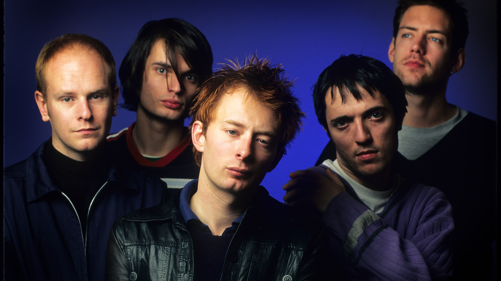
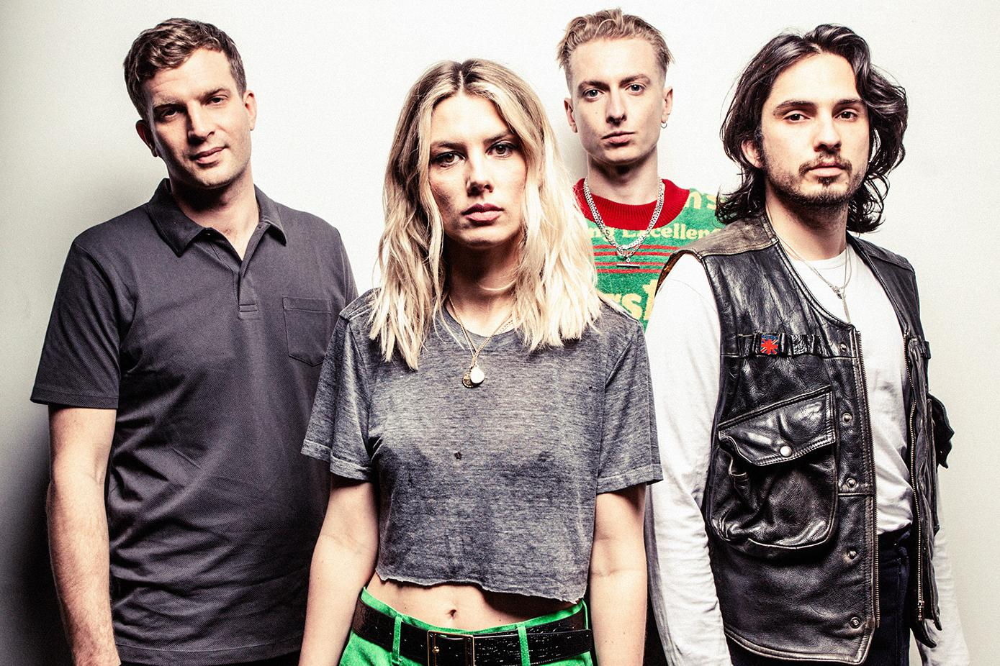
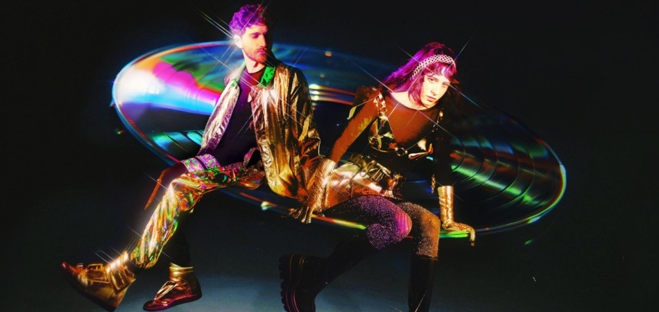
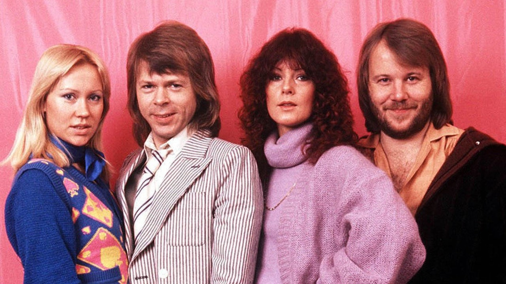
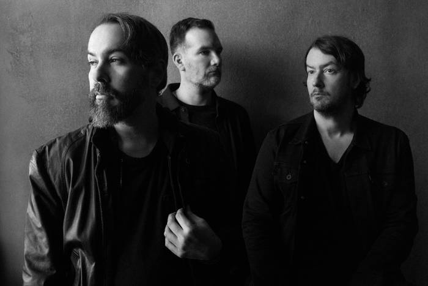
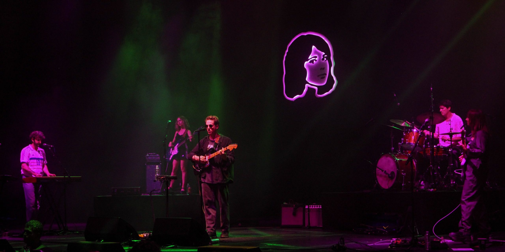
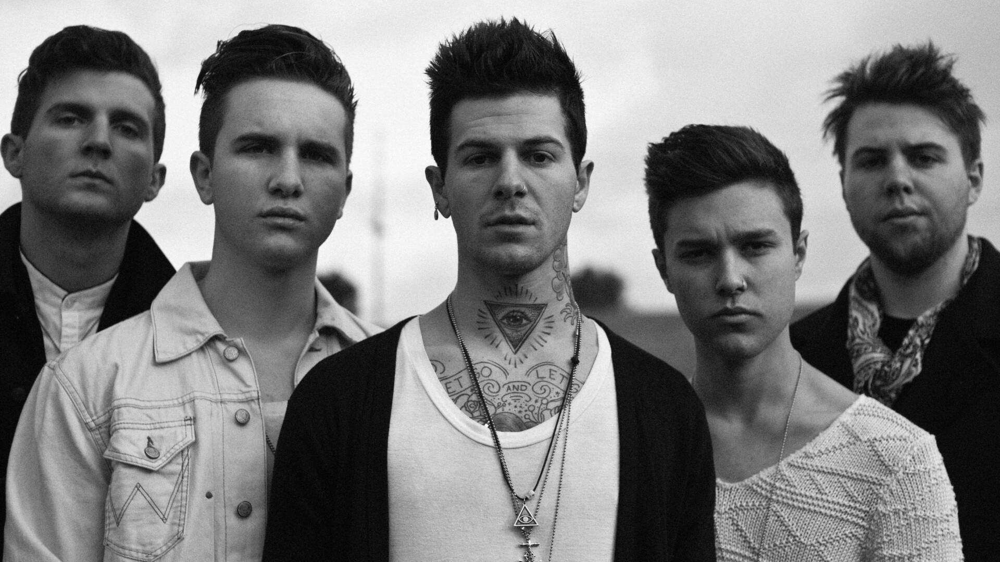
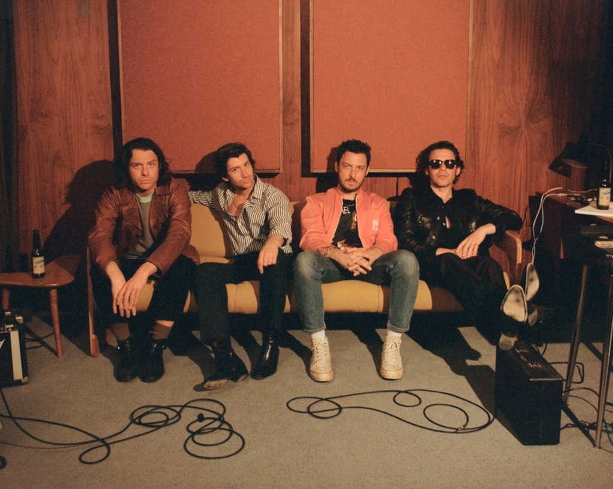
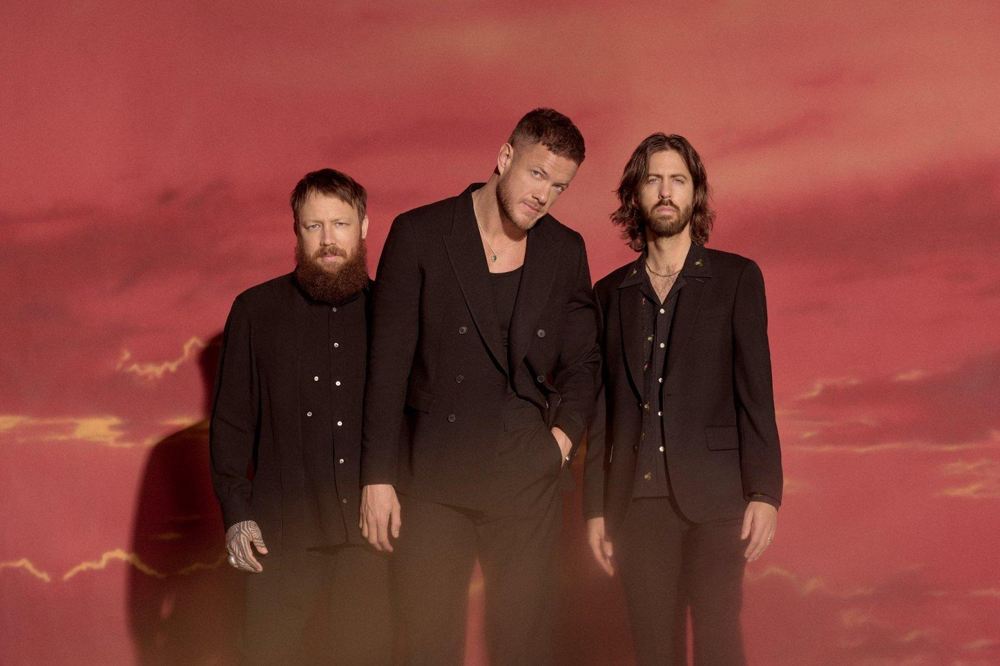

|
BANDS
|
|
Before I start the list, I would like to clarify, that by this list I am NOT saying that one band is worse than the other.
I love them all.
The more I listen to the band currently, the higher it will be on my list. But you should know I listen to solo artists way more than to bands.
Lets begin! |
| 1. Radiohead |
|  |
|
Genre: alternative rock From: Abingdon, Oxfordshire Formed in: 1985 What I have to say: I must admit that I started listening to them mostly because of a TV series called Yellowjackets. If you know, you know. I listen to them less now that Yellowjackets new season has already aired. But I still see soulcrushing edits with their songs on Tik Tok. |
| 2. Wolf Alice |
|  |
|
Genre: alternative indie rock From: London, UK Formed in: 2010 What I have to say: I came across this band randomly on Spotify by listening to their song Dont Delete The Kisses. I loved it! My biggest regret is that, when they were performing on Pohoda festival I didnt attend their concert :(. I didnt know them back then, but I would love to see them play now. |
| 3. Magdalena Bay |
|  |
|
Genre: alternative pop From: Miami, Florida Formed in: 2016 What I have to say: I discovered this band thanks to upcoming Pohoda Festival 2025 where they are going to be performing in July. Ive already known their popular song Killshot from some edits on Tik Tok. Im looking forward to seeing them live in two months. |
| 4. ABBA |
|  |
|
Genre: pop From: Stockholm, Sweden Formed in: 1972 What I have to say: Nothing! Its a classic. |
| 5. Cigarettes After Sex |
|  |
|
Genre: dream pop From: El Paso, Texas Formed in: 2008 What I have to say: I usually listen to them when I feel down. Their songs all sound the same, but thats kinda what I like about them. Its a vibe. |
| 6. TV Girl |
|  |
|
Genre: indie pop From: San Diego, California Formed in: 2010 What I have to say: I feel like their music is just different from others. They get creative with music samples and I dig it. I cant be the only one who thought TV girl is a solo female artist, right? |
| 7. The Neighbourhood |
|  |
|
Genre: alternative indie rock From: Newbury Park, California Formed in: 2011 What I have to say: I was really into The Neighbourhood like two years ago. I still listen to some of their songs from time to time so thats why they are on 7th place. |
| 8. Arctic Monkeys |
|  |
|
Genre: indie rock From: Sheffield, England Formed in: 2002 What I have to say: I was really into Arctic Monkeys also around two years ago. I dont really listen to them at the moment, but I feel the Arctic Monkeys faze coming back. |
| Honorable mention: Imagine Dragons |
|  |
|
Genre: pop rock From: Las Vegas, Nevada Formed in: 2008 What I have to say: I am so grateful, that I saw them play live at the Lovestream Festival in 2023. It is one of my best memories. We were standing up almost all day, but it was worth it, because we were near the lead singer and that was awesome! |